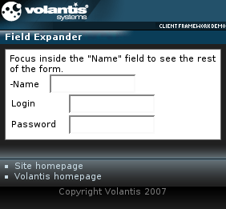

The Field Expander widget hides fields in a form or wizard step, until a related form field receives focus. so you can reduce 'clutter' in a form with many fields to complete.
In the this example, the 'Login' and 'Password' fields are initially hidden. They are made visible when focus is moved to the 'Name' field.

Widget form elements include the XDIME 2 elements from the XForms namespace. They provide both the form model and the basic structure inside the widget.
<xf:model>
<xf:instance>
<si:instance>
<si:item name="name"/>
<si:item name="login"/>
<si:item name="password"/>
</si:instance>
</xf:instance>
</xf:model>
<style type="text/css" media="handheld,all">
.fexpander {
mcs-toggle-event: focus;
}
</style>
<div class="widget">
<div>Focus inside the "Name" field to see the rest of the form.</div>
<widget:field-expander class="fexpander" id="myFieldExpander">
<xf:input ref="name">
<xf:label>Name </xf:label>
</xf:input>
<xf:group>
<div style="mcs-layout: 'layouts/2x2.mlyt'">
<xf:input ref="login" style="mcs-container: 'top-right'">
<xf:label style="mcs-container: 'top-left'">Login</xf:label>
</xf:input>
<xf:input ref="password" style="mcs-container: 'bottom-right'">
<xf:label style="mcs-container: 'bottom-left'">Password</xf:label>
</xf:input>
</div>
</xf:group>
</widget:field-expander>
</div>Your complete fieldexpander.xdime code should look like this.
<?xml version="1.0" encoding="UTF-8"?>
<html xmlns="http://www.w3.org/2002/06/xhtml2"
xmlns:mcs="http://www.volantis.com/xmlns/2006/01/xdime/mcs"
xmlns:template="http://www.volantis.com/xmlns/marlin-template"
xmlns:widget="http://www.volantis.com/xmlns/2006/05/widget"
xmlns:si="http://www.volantis.com/xmlns/2006/01/xdime2/si"
xmlns:xf="http://www.w3.org/2002/xforms"
xmlns:urid="http://www.volantis.com/xmlns/marlin-uri-driver">
<head>
<title>Field Expander Widget</title>
<link rel="mcs:theme" href="/themes/main.mthm"/>
<link rel="mcs:layout" href="/layouts/main.mlyt"/>
<style type="text/css" media="handheld,all">
.fexpander {
mcs-toggle-event: focus;
}
</style>
<xf:model>
<xf:instance>
<si:instance>
<si:item name="login"/>
<si:item name="password"/>
</si:instance>
</xf:instance>
</xf:model>
</head>
<body>
<template:apply href="templates/demo-main.xdtpl">
<template:binding name="title" value="Field Expander"/>
<template:binding name="content">
<template:complexValue>
<div class="widget">
<div>Focus inside the "Name" field to see the rest of the form.</div>
<widget:field-expander class="fexpander" id="myFieldExpander">
<xf:input ref="name">
<xf:label>Name </xf:label>
</xf:input>
<xf:group>
<div style="mcs-layout: 'layouts/2x2.mlyt'">
<xf:input ref="login" style="mcs-container: 'top-right'">
<xf:label style="mcs-container: 'top-left'">Login</xf:label>
</xf:input>
<xf:input ref="password" style="mcs-container: 'bottom-right'">
<xf:label style="mcs-container: 'bottom-left'">Password</xf:label>
</xf:input>
</div>
</xf:group>
</widget:field-expander>
</div>
</template:complexValue>
</template:binding>
</template:apply>
</body>
</html>| Name | Purpose |
|---|---|
| div | A section used to add extra structure to documents. Style sheets can be used to control the presentation. |
| si:instance | Container for data items used to supply initial values for forms controls, or to provide additional data to be submitted with the form. |
| si:item | Defines an item of instance data that is required if a form control needs to be initialized, or when data not associated with a form control needs to be provided during form submission. |
| widget:field-expander | Defines a Field Expander widget that includes initially hidden form fields. |
| xf:group | Combines a set of form controls into a user interface component. By applying theme properties on this element, you can control where form fragmentation occurs, and define or override at runtime the link texts specified on form fragment layouts. |
| xf:input | A form control for text input. |
| xf:instance | Optional element that contains instance data associated with the model element. It is used to supply initial values for forms controls, or to provide additional data to be submitted with the form. |
| xf:label | Provides a descriptive label for forms controls. |
| xf:model | Represents a form definition, used as a container for elements associated with its submission. |
| Core attributes | Attributes that are common to XDIME 2 elements. |